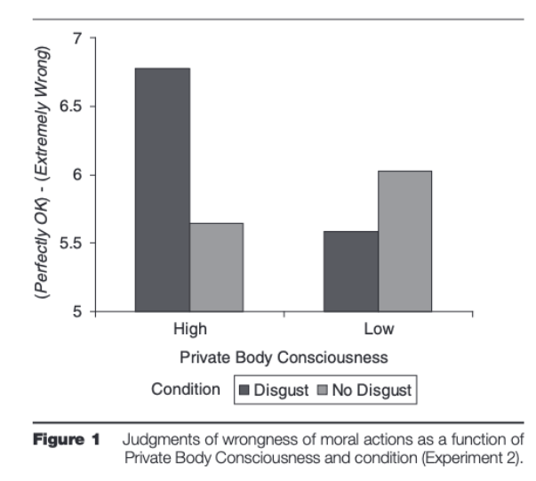
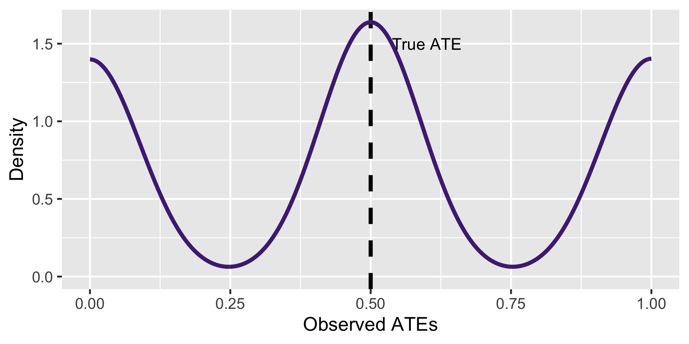

| ID | \(Y(1)\) | \(Y(0)\) |
|---|---|---|
| 1 | 0 | 0 |
| 2 | 1 | 0 |
| 3 | 1 | 0 |
| 4 | 1 | 1 |
Introduction to Empirical Methods in Political Science
Surveys and how to make them good
Importance of random sampling to justify statistical inference via asymptotic properties (CLT)
So far: Mostly about descriptive statistics
Moving from statistical inference to causal inference
Experiments as the gold standard
Tuesday: Logic of experimentation
Thursday: Learning from experiments
Ideal study: Compare the same person with and without singing
Actual study: ???
What would allow us to make more confident causal claims?
Imagine we want to establish whether a medical treatment improves people’s lives
We want to make sure that the treatment actually works
In other words, we want to attribute the treatment as the cause of health improvement
Can we just show that people who receive the treatment get better?
No! we need some kind of control
Ingredients
\(D = \{0,1\}\) condition (0: control, 1: treatment)
\(Y(D)\) is the individual potential outcome
\[ Y = \begin{cases} Y(0) & \text{if} & D = 0 \\ Y(1) & \text{if} & D = 1 \end{cases} \]
Switching equation
\[ Y = Y(1) \cdot D + Y(0) \cdot (1 - D) \]
| ID | \(Y(1)\) | \(Y(0)\) |
|---|---|---|
| 1 | 0 | 0 |
| 2 | 1 | 0 |
| 3 | 1 | 0 |
| 4 | 1 | 1 |
\(\tau_i = Y(1) - Y(0)\) is the individual treatment effect
| ID | \(Y(1)\) | \(Y(0)\) | \(\tau_i\) |
|---|---|---|---|
| 1 | 0 | 0 | 0 |
| 2 | 1 | 0 | 1 |
| 3 | 1 | 0 | 1 |
| 4 | 1 | 1 | 0 |
\(\tau_i = Y(1) - Y(0)\) is the individual treatment effect
\(\tau = \frac{1}{n} \sum_{i=1}^n \tau_i\) is the average treatment effect (ATE)
| ID | \(Y(1)\) | \(Y(0)\) | \(\tau_i\) |
|---|---|---|---|
| 1 | 0 | 0 | 0 |
| 2 | 1 | 0 | 1 |
| 3 | 1 | 0 | 1 |
| 4 | 1 | 1 | 0 |
Unobserved
|
|||
|---|---|---|---|
| ID | \(Y(1)\) | \(Y(0)\) | \(\tau_i\) |
| 1 | 0 | 0 | 0 |
| 2 | 1 | 0 | 1 |
| 3 | 1 | 0 | 1 |
| 4 | 1 | 1 | 0 |
Assign condition \(D\) (0: control, 1: treatment)
Unobserved
|
Observed
|
||||
|---|---|---|---|---|---|
| ID | \(Y(1)\) | \(Y(0)\) | \(\tau_i\) | \(D\) | \(Y\) |
| 1 | 0 | 0 | 0 | 1 | 0 |
| 2 | 1 | 0 | 1 | 0 | 0 |
| 3 | 1 | 0 | 1 | 1 | 1 |
| 4 | 1 | 1 | 0 | 0 | 1 |
To know the ATE we need \((Y(1) - Y(0))\)
But we only observe one at a time for each unit
Unobserved
|
Observed
|
||||
|---|---|---|---|---|---|
| ID | \(Y(1)\) | \(Y(0)\) | \(\tau_i\) | \(D\) | \(Y\) |
| 1 | 0 | 0 | 0 | 1 | 0 |
| 2 | 1 | 0 | 1 | 0 | 0 |
| 3 | 1 | 0 | 1 | 1 | 1 |
| 4 | 1 | 1 | 0 | 0 | 1 |
This is the FUNDAMENTAL PROBLEM OF CAUSAL INFERENCE
We can rewrite the ATE as \(\tau = E[\tau_i]\)
And then expand since \(\tau_i = Y(1) - Y(0)\)
\[ \tau = E[Y(1) - Y(0)] \]
We can rewrite the ATE as \(\tau = E[\tau_i]\)
And then expand since \(\tau_i = Y(1) - Y(0)\)
\[ \underbrace{\tau = E[Y(1) - Y(0)]}_\text{Average individual treatment effect} \]
Which is equivalent to
\[ \tau = E[Y(1)] - E[Y(0)] \]
We can rewrite the ATE as \(\tau = E[\tau_i]\)
And then expand since \(\tau_i = Y(1) - Y(0)\)
\[ \underbrace{\tau = E[Y(1) - Y(0)]}_\text{Average individual treatment effect} \]
Which is equivalent to
\[ \underbrace{\tau = E[Y(1)] - E[Y(0)] }_{\text{Difference in average potential outcomes}} \]
(because the sum of the averages = average of the sums)
We want to know
\[ \underbrace{\tau = E[Y(1)] - E[Y(0)]}_{\text{Difference in average potential outcomes}} \]
But we can only calculate
\[ \widehat \tau = E[Y(1) | D = 1] - E[Y(0) | D = 0] \]
We want to know
\[ \underbrace{\tau = E[Y(1)] - E[Y(0)]}_{\text{Difference in average potential outcomes}} \]
But we can only calculate
\[ \widehat \tau = E[Y(1) | D = 1] - E[Y(0) | D = 0] \]
We want to know
\[ \underbrace{\tau = E[Y(1)] - E[Y(0)]}_{\text{Difference in average potential outcomes}} \]
But we can only calculate
\[ \widehat \tau = E[Y(1) | D = 1] - E[Y(0) | D = 0] \]
We want to know
\[ \underbrace{\tau = E[Y(1)] - E[Y(0)]}_{\text{Difference in average potential outcomes}} \]
But we can only calculate
\[ \underbrace{\widehat \tau = E[Y(1) | D = 1] - E[Y(0) | D = 0]}_\text{Difference in (observed) means between treatment and control groups} \]
What would make these two equivalent?
We want to know
\[ \underbrace{\tau = E[Y(1)] - E[Y(0)]}_{\text{Difference in average potential outcomes}} \]
But we can only calculate
\[ \underbrace{\widehat \tau = E[Y(1) \color{purple}{| D = 1}] - E[Y(0) \color{purple}{| D = 0}]}_\text{Difference in (observed) means between treatment and control groups} \]
What would make these two equivalent?
We want to know
\[ \underbrace{\tau = E[Y(1)] - E[Y(0)]}_{\text{Difference in average potential outcomes}} \]
But we can only calculate
\[ \underbrace{\widehat \tau = E[Y(1) \color{purple}{| D = 1}] - E[Y(0) \color{purple}{| D = 0}]}_\text{Difference in (observed) means between treatment and control groups} \]
We want treatment assignment to be ignorable
If we can claim that units are assigned to conditions \(D\) independently from potential outcomes
Then we can claim that \(\widehat \tau\) is a valid approximation of \(\tau\)
So that the difference in means is an unbiased estimator of the ATE
Random assignment guarantees this in expectation
If random assignment works:
No reverse causation
No selection bias
No omitted variable bias
But you can always get unlucky!
ID Y0 Y1 D Y
1 001 0.484520880 0.73452088 1 0.73452088
2 002 0.770743000 1.02074300 0 0.77074300
3 003 0.186039041 0.43603904 1 0.43603904
4 004 -0.086703465 0.16329654 0 -0.08670346
5 005 0.681404050 0.93140405 0 0.68140405
6 006 1.970049082 2.22004908 0 1.97004908
7 007 0.034679490 0.28467949 0 0.03467949
8 008 -0.150141526 0.09985847 0 -0.15014153
9 009 1.687850716 1.93785072 1 1.93785072
10 010 0.784055885 1.03405589 1 1.03405589
11 011 -0.637762442 -0.38776244 0 -0.63776244
12 012 -0.277068057 -0.02706806 1 -0.02706806
13 013 0.823002236 1.07300224 1 1.07300224
14 014 -2.189373502 -1.93937350 1 -1.93937350
15 015 -0.222094995 0.02790501 1 0.02790501
16 016 -0.351494528 -0.10149453 0 -0.35149453
17 017 0.540790459 0.79079046 0 0.54079046
18 018 1.449967063 1.69996706 0 1.44996706
19 019 0.481129672 0.73112967 1 0.73112967
20 020 0.796908236 1.04690824 0 0.79690824
21 021 -0.272698545 -0.02269854 0 -0.27269854
22 022 -0.528084258 -0.27808426 1 -0.27808426
23 023 0.511897021 0.76189702 0 0.51189702
24 024 1.367877780 1.61787778 0 1.36787778
25 025 -0.535881986 -0.28588199 0 -0.53588199
26 026 -1.224490453 -0.97449045 1 -0.97449045
27 027 -0.555344970 -0.30534497 1 -0.30534497
28 028 0.787555688 1.03755569 0 0.78755569
29 029 1.290575024 1.54057502 0 1.29057502
30 030 -0.298503924 -0.04850392 0 -0.29850392
31 031 1.106959557 1.35695956 1 1.35695956
32 032 1.411233943 1.66123394 1 1.66123394
33 033 -0.350808158 -0.10080816 1 -0.10080816
34 034 1.972989711 2.22298971 1 2.22298971
35 035 0.374120614 0.62412061 0 0.37412061
36 036 0.968949768 1.21894977 0 0.96894977
37 037 -0.983115779 -0.73311578 1 -0.73311578
38 038 3.808510801 4.05851080 0 3.80851080
39 039 0.039273376 0.28927338 1 0.28927338
40 040 1.837033250 2.08703325 1 2.08703325
41 041 0.547316635 0.79731664 0 0.54731664
42 042 0.753942870 1.00394287 0 0.75394287
43 043 -0.159841526 0.09015847 1 0.09015847
44 044 -0.909914124 -0.65991412 0 -0.90991412
45 045 -0.287756862 -0.03775686 1 -0.03775686
46 046 -0.016596088 0.23340391 0 -0.01659609
47 047 1.156909778 1.40690978 1 1.40690978
48 048 -0.260608734 -0.01060873 1 -0.01060873
49 049 -0.231329737 0.01867026 1 0.01867026
50 050 0.513183579 0.76318358 1 0.76318358
51 051 -0.795048217 -0.54504822 0 -0.79504822
52 052 -0.555553990 -0.30555399 0 -0.55555399
53 053 -1.335733945 -1.08573394 0 -1.33573394
54 054 0.320930370 0.57093037 0 0.32093037
55 055 -0.717410370 -0.46741037 1 -0.46741037
56 056 0.186783022 0.43678302 0 0.18678302
57 057 1.124596005 1.37459600 0 1.12459600
58 058 -0.324272361 -0.07427236 1 -0.07427236
59 059 -0.334272206 -0.08427221 1 -0.08427221
60 060 0.847170983 1.09717098 1 1.09717098
61 061 -0.635433468 -0.38543347 0 -0.63543347
62 062 0.336639967 0.58663997 0 0.33663997
63 063 0.363978510 0.61397851 0 0.36397851
64 064 -1.117628192 -0.86762819 1 -0.86762819
65 065 0.387498325 0.63749833 1 0.63749833
66 066 -0.218631603 0.03136840 1 0.03136840
67 067 -0.506793156 -0.25679316 0 -0.50679316
68 068 1.204699505 1.45469951 1 1.45469951
69 069 1.059526302 1.30952630 0 1.05952630
70 070 -0.074526158 0.17547384 0 -0.07452616
71 071 -0.830365034 -0.58036503 1 -0.58036503
72 072 -0.468941145 -0.21894114 1 -0.21894114
73 073 1.345814015 1.59581402 1 1.59581402
74 074 -0.321602995 -0.07160300 0 -0.32160300
75 075 -0.642481428 -0.39248143 0 -0.64248143
76 076 -0.008674945 0.24132506 1 0.24132506
77 077 -1.545711919 -1.29571192 0 -1.54571192
78 078 1.176522445 1.42652245 1 1.42652245
79 079 -0.113464880 0.13653512 1 0.13653512
80 080 -0.152384954 0.09761505 0 -0.15238495
81 081 0.616091035 0.86609104 0 0.61609104
82 082 -0.441221119 -0.19122112 1 -0.19122112
83 083 0.663856430 0.91385643 1 0.91385643
84 084 -0.281822792 -0.03182279 0 -0.28182279
85 085 -0.859475186 -0.60947519 0 -0.85947519
86 086 -0.691828435 -0.44182843 0 -0.69182843
87 087 -0.474079361 -0.22407936 0 -0.47407936
88 088 0.333452142 0.58345214 1 0.58345214
89 089 1.405313529 1.65531353 1 1.65531353
90 090 -0.799631680 -0.54963168 0 -0.79963168
91 091 -0.777157287 -0.52715729 1 -0.52715729
92 092 0.148078529 0.39807853 1 0.39807853
93 093 0.166420515 0.41642051 1 0.41642051
94 094 -1.341202800 -1.09120280 1 -1.09120280
95 095 -0.070471560 0.17952844 1 0.17952844
96 096 -1.833589099 -1.58358910 0 -1.83358910
97 097 0.904463678 1.15446368 1 1.15446368
98 098 0.191287137 0.44128714 1 0.44128714
99 099 1.472670687 1.72267069 0 1.47267069
100 100 0.068868795 0.31886880 0 0.06886880True ATE: 0.25
Estimate: 0.246 (p = 0.191)
95% confidence interval: [ -0.12 , 0.62 ]
Survey experiments
Field experiments
Laboratory experiments
Depends on how treatments are delivered
Surveys in the UK (\(n = 762\)) and US (\(n = 1273\))
April-May 2010
Outcome: Support for military strike
2x2x2 survey experiment
Political regime: Democracy/not a democracy
Military alliances: Ally/not an ally
Military power: As strong/half as strong
Political regime: Democracy/not a democracy
Military alliances: Ally/not an ally
Trade: High level/not high level
Correspondence experiment with \(N = 8189\) legislators in the US
Also known as audit experiments
Send email about fake student seeking advice to become politician
Cue gender with student’s name
| Outcome | Male Sender | Female Sender | p-value |
|---|---|---|---|
| Received reply | 0.25 | 0.27 | 0.15 |
| Meaningful response | 0.11 | 0.13 | 0.47 |
| Praised | 0.05 | 0.06 | 0.17 |
| Offer to help | 0.03 | 0.05 | 0.09 |
| Warned against running | 0.01 | 0.02 | 0.14 |
| Substantive advice | 0.07 | 0.08 | 0.33 |
| Word count (logged) | 1.00 | 1.10 | 0.06 |
| Character count | 145.00 | 170.00 | 0.04 |
Why not much difference by gender?
Students at University of Virginia (n = 43, 18 male)
Offered to participate in study for course credit
Outcome: Moral judgment questions (several scenarios)
Treatment: Extraneous disgust (dirty room)
Control: No disgust (clean room)
On the desk there was a transparent plastic cup with the dried up remnants of a smoothie and a pen that was chewed up. Next to the desk was a trash can overflowing with garbage including greasy pizza boxes and dirty-looking tissues. For the no-disgust condition, the same desk was used, but it was covered up with a clean white tablecloth. A new chair was provided, and none of the disgusting objects were present. A new and unchewed pen was provided for filling out the questionnaires.

Last week:
This week:
Can combine both, but often do not need to
Introduction to Empirical Methods in Political Science
Experiments as the gold standard for causal inference
Thanks to random assignment, we can rule out:
Reverse causation
Selection bias
Omitted variable bias
What exactly can we learn from experiments?
How do you prove that a policy intervention works?
We want to make statements about causation
To back up those statements, we need to rule out confounding factors
What kind of critique is this?
We learned that random assignment allows us to rule out potential confounders
We can claim that treatment assignment is ignorable or independent from other factors
Challenge: This is only true in expectation
| ID | Female | Y(0) | Y(1) |
|---|---|---|---|
| 1 | 0 | 0 | 0 |
| 2 | 0 | 0 | 1 |
| 3 | 1 | 0 | 1 |
| 4 | 1 | 1 | 1 |
\(Y(*)\) are the potential outcomes under control (0) and treatment (1), respectively
\(Y(*) = 1\) means person’s life improves, \(Y(*) = 0\) means life stays the same
| ID | Female | Y(0) | Y(1) |
|---|---|---|---|
| 1 | 0 | 0 | 0 |
| 2 | 0 | 0 | 1 |
| 3 | 1 | 0 | 1 |
| 4 | 1 | 1 | 1 |
We have:
| ID | Female | Y(0) | Y(1) | Z |
|---|---|---|---|---|
| 1 | 0 | 0 | 0 | 0 |
| 2 | 0 | 0 | 1 | 0 |
| 3 | 1 | 0 | 1 | 1 |
| 4 | 1 | 1 | 1 | 1 |
We happened to randomly assign the policy to the two women
We only observe the potential outcomes that corresponds to the treatment status
| ID | Female | Y(0) | Y(1) | Z | Y obs |
|---|---|---|---|---|---|
| 1 | 0 | 0 | 0 | 0 | 0 |
| 2 | 0 | 0 | 1 | 0 | 0 |
| 3 | 1 | 0 | 1 | 1 | 1 |
| 4 | 1 | 1 | 1 | 1 | 1 |
\[ATE = E[Y(1)] - E[Y(0)] = 3/4 - 1/4 = 1/2\]
| ID | Female | Y(0) | Y(1) | Z | Y obs |
|---|---|---|---|---|---|
| 1 | 0 | 0 | 0 | 0 | 0 |
| 2 | 0 | 0 | 1 | 0 | 0 |
| 3 | 1 | 0 | 1 | 1 | 1 |
| 4 | 1 | 1 | 1 | 1 | 1 |
We can approximate the ATE with \(\widehat{ATE} = 2/2 - 0/2 = 1\)
We are off the mark! What happens if we redo the experiment?
| ID | Female | Y(0) | Y(1) | Z | Y obs |
|---|---|---|---|---|---|
| 1 | 0 | 0 | 0 | 1 | 0 |
| 2 | 0 | 0 | 1 | 0 | 0 |
| 3 | 1 | 0 | 1 | 1 | 1 |
| 4 | 1 | 1 | 1 | 0 | 1 |
We still have \(ATE = 1/2\)
But now \(\widehat{ATE} = 1/2 - 1/2 = 0\)
Off the mark in the opposite direction
Experiment 1
|
Experiment 2
|
||||||
|---|---|---|---|---|---|---|---|
| ID | Female | Y(0) | Y(1) | Z | Y obs | Z | Y obs |
| 1 | 0 | 0 | 0 | 0 | 0 | 1 | 0 |
| 2 | 0 | 0 | 1 | 0 | 0 | 0 | 0 |
| 3 | 1 | 0 | 1 | 1 | 1 | 1 | 1 |
| 4 | 1 | 1 | 1 | 1 | 1 | 0 | 1 |
Perhaps men and women react to treatment differently
We want results to not depend on whether we assign treatments to men or women
Experiment 1: 2/2 women in treatment and 0/2 in control (imbalanced)
Experiment 2: 1/2 woman in treatment and 1/2 in control (balanced)

Experiments only rule out the role of potential confounders IN EXPECTATION
We can sustain this claim in two ways
CLT: With a sufficiently large sample (But how large is large enough?)
WLLN: By repeating the same experiment multiple times (Nobody does this)
We only know statitiscal properties in our simulations
Need a lot of domain expertise to attribute ATE to policy
This involves explaining why it works
First step toward knowing whether it would work somewhere else
Internal validity: We can (probabilistically) attribute effect to policy intervention
External validity: Whether effect extrapolates or generalizes
Extrapolation: Whether it works elsewhere
Generalization: Whether it works everywhere
| Type | Concern |
|---|---|
| Samples | Does this apply to a different population? |
| Contexts | Does this apply in a different setting? |
| Treatments | Do they resemble real-world phenomena? |
| Outcomes | Do they reflect actual behaviors? |
| Type | Concern |
|---|---|
| Samples | Does this apply to a different population? |
| Contexts | Does this apply in a different setting? |
| Treatments | Do they resemble real-world phenomena? |
| Outcomes | Do they reflect actual behaviors? |
| Type | Concern |
|---|---|
| Samples | Does this apply to a different population? |
| Contexts | Does this apply in a different setting? |
| Treatments | Do they resemble real-world phenomena? |
| Outcomes | Do they reflect actual behaviors? |
| Type | Concern |
|---|---|
| Samples | Does this apply to a different population? |
| Contexts | Does this apply in a different setting? |
| Treatments | Do they resemble real-world phenomena? |
| Outcomes | Do they reflect actual behaviors? |
| Type | Concern |
|---|---|
| Samples | Does this apply to a different population? |
| Contexts | Does this apply in a different setting? |
| Treatments | Do they resemble real-world phenomena? |
| Outcomes | Do they reflect actual behaviors? |
Example: A house burns down because the television was left on
Not all houses with TVs left on burn down, but sometimes they do, perhaps because the wiring was poor
A support factor is one part of the causal pie
Causal pie: A set of causes that are jointly but not separately sufficient for a contribution to an effect (INUS causation)
Experiments help in establishing cause and effect
But do not explain how/why/where
Need more knowledge to draw definitive conclusions